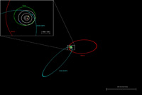
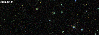

August 18, 2008
|
+ enlarge  |
| The orbit of the newly discovered solar system object SQ372 (blue), in comparison to the orbits of Neptune, Pluto, and Sedna (white, green, red). The location of the Sun is marked by the yellow dot at the center. The inset panel shows an expanded view, including the orbits of Uranus, Saturn, and Jupiter inside the orbit of Neptune. Even on this expanded scale, the size of Earth's orbit would be barely distinguishable from the central dot. (Credit: N. Kaib) |
|
+ enlarge  |
| Animation showing the detection of SQ372 by SDSS-II. Successive frames show images from the SDSS-II supernova survey taken on October 21, 23, and 28, 2006. SQ372 changes position as it moves in its orbit, while the positions of the stars, which are much more distant, stay fixed. (Credit: A. Becker and SDSS) |
CHICAGO -- A "minor planet" with the prosaic name 2006 SQ372 is just over two billion miles from Earth, a bit closer than the planet Neptune. But this lump of ice and rock is beginning the return leg of a 22,500-year journey that will take it to a distance of 150 billion miles, nearly 1,600 times the distance from the Earth to the Sun, according to a team of researchers from the Sloan Digital Sky Survey (SDSS-II).
The discovery of this remarkable object was reported today in Chicago, at an international symposium titled "The Sloan Digital Sky Survey: Asteroids to Cosmology." A paper describing the discovery technique and the properties of 2006 SQ372 is being prepared for submission to The Astrophysical Journal.
The orbital paths of the major planets are nearly circular, but the orbit of 2006 SQ372 is an ellipse that is four times longer than it is wide, said University of Washington astronomer Andrew Becker, who led the discovery team. The only known object with a comparable orbit is Sedna -- a distant, Pluto-like dwarf planet discovered in 2003 -- but 2006 SQ372's orbit takes it more than one-and-a-half times further from the Sun, and its orbital period is nearly twice as long.
The new object is much smaller than Sedna, Becker said, probably 30-60 miles across instead of nearly 1,000. "It's basically a comet, but it never gets close enough to the Sun to develop a long, bright tail of evaporated gas and dust."
Becker's team found 2006 SQ372 by applying a specialized computer searching algorithm to data taken for a completely different purpose: finding supernova explosions billions of light years away to measure the expansion of the universe. The SDSS-II supernova survey scanned the same long stripe of sky, an area 1,000 times larger than the full moon, every clear night in the fall of 2005, 2006, and 2007.
"If you can find things that explode, you can also find things that move, but you need different tools to look for them," said team member Lynne Jones, also of the University of Washington. The only objects close enough to change position noticeably from one night to the next are in our own solar system, Jones explained.
SQ372 was first discovered in a series of images taken between September 27 and October 21, 2006. Team member Andrew Puckett, of the University of Alaska Anchorage, then searched the supernova survey's Fall 2005 observations to find earlier detections, thus securing the discovery. Subsequent SDSS detections of SQ372 have been found in data from the 2006 and 2007 observing seasons.
University of Washington graduate student Nathan Kaib, another member of the discovery team, has been running computer simulations to try to understand out how 2006 SQ372 might have acquired its unusual orbit. "It could have formed, like Pluto, in the belt of icy debris beyond Neptune, then been kicked to large distance by a gravitational encounter with Neptune or Uranus," said Kaib. "However, we think it is more probable that SQ372 comes from the inner edge of the Oort Cloud."
In 1950, Kaib explained, the Dutch astronomer Jan Oort hypothesized that most comets come from a distant reservoir of icy, asteroid-like bodies, which were ejected from the inner solar system by gravitational kicks from the giant planets as the planets themselves were forming four and a half billion years ago. Most objects in the Oort cloud orbit the Sun at distances of several trillion miles, but the gravity of passing stars can alter their orbits, flinging some into interstellar space and deflecting others to the inner solar system where they "light up" as comets.
Even at its most distant turning point, 2006 SQ372 will be ten times closer to the Sun than the supposed main body of the Oort Cloud, said Kaib. "The existence of an 'inner' Oort cloud has been theoretically predicted for many years, but SQ372 and perhaps Sedna are the first objects we have found that seem to originate there. It's exciting that we are beginning to verify these predictions."
Becker noted that 2006 SQ372 was bright enough to find with the SDSS only because it is near its closest approach to the Sun, and that the SDSS-II supernova survey observed less than one percent of the sky. "There are bound to be many more objects like this waiting to be discovered by the next generation of surveys, which will search to fainter levels and cover more area," said Becker. "In a decade, we should know a lot more about this population than we do now."
"One of our goals," said Kaib, "is to understand the origin of comets, which are among the most spectacular celestial events. But the deeper goal is to look back into the early history of our solar system and piece together what was happening when the planets formed."
Funding for the SDSS and SDSS-II has been provided by the Alfred P. Sloan Foundation, the Participating Institutions, the National Science Foundation, the U.S. Department of Energy, the National Aeronautics and Space Administration, the Japanese Monbukagakusho, the Max Planck Society, and the Higher Education Funding Council for England. The SDSS Web Site is http://www.sdss.org/.
SDSS is managed by the Astrophysical Research Consortium for the Participating Institutions. The SDSS-II Participating Institutions are the American Museum of Natural History, Astrophysical Institute Potsdam, University of Basel, University of Cambridge, Case Western Reserve University, University of Chicago, Drexel University, Fermilab, the Institute for Advanced Study, the Japan Participation Group, Johns Hopkins University, the Joint Institute for Nuclear Astrophysics, the Kavli Institute for Particle Astrophysics and Cosmology, the Korean Scientist Group, the Chinese Academy of Sciences (LAMOST), Los Alamos National Laboratory, the Max-Planck-Institute for Astronomy (MPIA), the Max-Planck-Institute for Astrophysics (MPA), New Mexico State University, Ohio State University, University of Pittsburgh, University of Portsmouth, Princeton University, the United States Naval Observatory, and the University of Washington.
{kind=link}